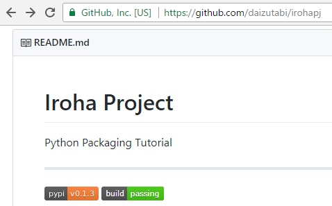

継続的インテグレーションでのテスト
継続的インテグレーションツールとして，GitHubと連動するTravis CIを用いる．Travis CIがはじめてならば，まずはGetting startedを一読しよう．以下では最低限の，少なくとテストがパスするまでの手順について説明する．
準備
Travis CIにGitHubアカウントでログインする．画面右上のユーザ名のメニューからAccountsを選択する．レポジトリ一覧が表示されるので，irohaレポジトリをビルド可能状態にする．
 daizutabi/iroha
daizutabi/iroha
ローカルのirohaプロジェクトディレクトリ下に.travis.ymlファイルを作成し，以下の内容で保存する．
language: python
ビルトが成功するまで
git pushする．するとTravis CIのページが自動で切り替わり，ビルド処理を始めたことがわかるだろう．python 2.7といった文字列が見受けられる．しばらくすると，ビルドが失敗に終わったことが通知される．何も設定していないので当然だ．Job logを見ると，requirements.txtがないことに警告が出ている模様だ．requirements.txtには依存パッケージを記述するようなので，以下の内容のファイルをirohaディレクト下にrequirements.txtの名前で保存しておく．
click
Note
irohaパッケージが依存するパッケージは，setup.py内に記述していた．再度，requirements.txtにも同じ内容を書くのは冗長でないかと疑問を持つかもしれない．冗長を回避するために，setup.pyがrequirements.txtの内容を解析して自動で依存パッケージを指定することも可能である．
その他もろもろのドキュメントを読んでみると，Pythonのバージョン，インストール作業，および実行スクリプトを指定すればよいようだ．現時点での.travis.ymlは以下のようになっている．
language: python
python:
- "2.7"
- "3.4"
- "3.5"
- "3.6"
install:
- pip install -r requirements.txt
script:
- pytest
もう一度git pushする．pytestの実行までは進んだようだが，エラーで停止してしまった．どうやらiroaパッケージが見つからないらしい．.travis.ymlのinstallのところまで処理が進んだとき，カレントディレクトリはプロジェクトのルートディレクトリになっているようなので，次のようにして自分自身を作業用としてインストールする．
language: python
(中略)
install:
- pip install -r requirements.txt
- pip install -e .
(後略)
再びgit pushする．今度はビルドに成功した．
Tip
pip install -e . 以外でパッケージにパスを通す方法は？
バッジをつけよう
ビルドに成功したのでGitHubレポジトリに  のバッジをつけよう．あわせてPyPIのバッジもつけておく．
のバッジをつけよう．あわせてPyPIのバッジもつけておく．
README.mdを以下の内容で保存する．
# Iroha Project
Python Packaging Tutorial
---
[![PyPI Version][pypi-v-image]][pypi-v-link]
[![Build Status][travis-image]][travis-link]
[pypi-v-image]: https://img.shields.io/pypi/v/iroha.png
[pypi-v-link]: https://pypi.python.org/pypi/iroha
[travis-image]: https://travis-ci.org/daizutabi/iroha.svg?branch=master
[travis-link]: https://travis-ci.org/daizutabi/iroha
git push後にレポジトリのページを確認するとバッジが表示されている．
